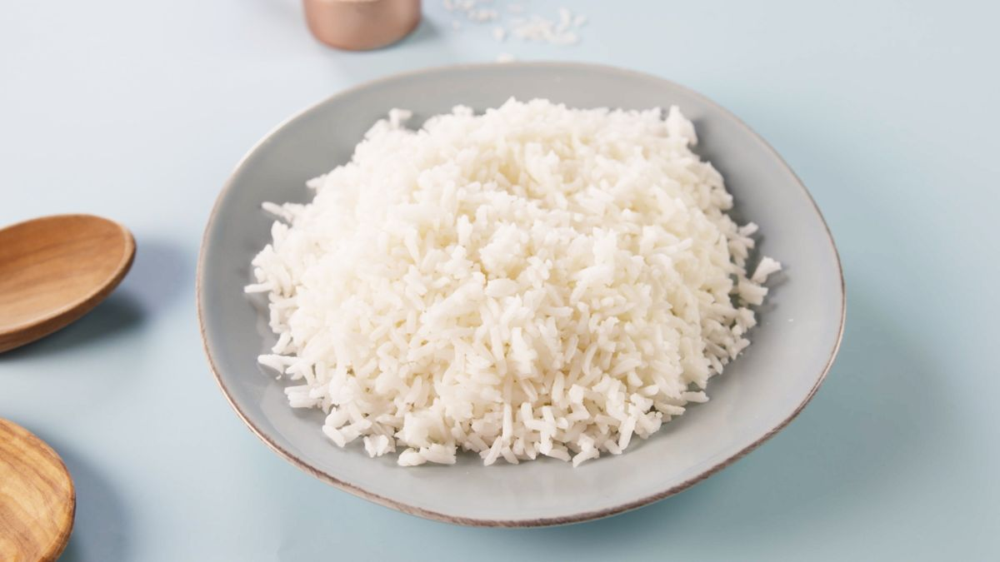

How to make Simple Rice!
Ingredients:
- Rice; 1/2 Cups
- Water 1 Cup
- Salt (To Taste)
- Vegetable (To Taste)
Fun fact: Ratio of rice to water is 1:2, means we use twice the quantity of water as we use of rice.
Instructions:
- Take 1/2 cups of rice and rinse them.
- Take a pan and pour 1 cup water in it. Set heat to max.
- Add rice to pan with water and add salt according to taste.
- Cover it for 10 minutes and keep check to not burn rice.
- Turn off the heat.
- Cover the pan for approx. 5 minutes.
- When no visible water at bottom, your rice are ready to be served.
Gallery:
Enjoy your rice with either a spread, spices or condiments!

Additional Info:
This recipie is easy to cook, and uses minimum time and resources.
For any other recipies;
Visit our website!